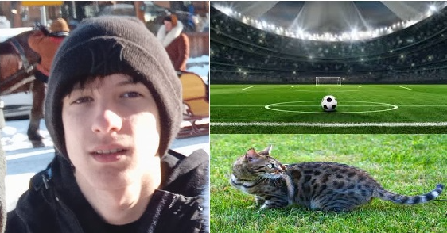

| Óraszám | Hétfő | Kedd | Szerda | Csütörtök | Péntek | ||
|---|---|---|---|---|---|---|---|
| 0. | 7:15 - 8:00 | Programozási Alapok | |||||
| 1. | 8:00 - 8:45 | Programozási alapok | Magyar nyelv és irodalom | Angol nyelv | |||
| 2. | 8:55 - 9:40 | Testnevelés | Magyar nyelv és irodalom | Osztályfőnöki | Informatika és távközlés | Történelem | |
| 3. | 9:50 - 10:35 | Történelem | Angol nyelv | Angol nyelv | Informatika és távközlés | Matematika | |
| 4. | 10:45 - 11:30 | IKT projektmunka | Angol nyelv | Angol nyelv | Informatika és távközlés | Matematika | |
| 5. | 11:40 - 12:25 | Komplex természettudomány | Magyar nyelv és irodalom | Komplex természettudomány | Testnevelés | Honvédelem | |
| 6. | 12:45 - 13:30 | IKT projektmunka | Matematika | Matematika | Matematika | Magyar nyelv és irodalom | |
| 7. | 13:35 - 14:20 | Digitális kultúra | Komplex természettudomány | Történelem | Testnevelés | ||
| 8. | 14:25 - 15:10 | Digitális kultúra | Testnevelés |
Juhász Kristóf vagyok 15 éves. Alsózsolcán élek. A Herman Ottó Általános iskolába jártam Alsózsolcán. Szeretek focizni, biciklizni.
